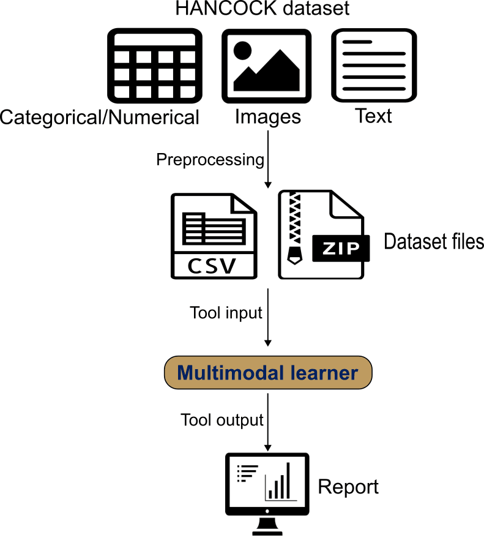
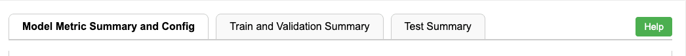
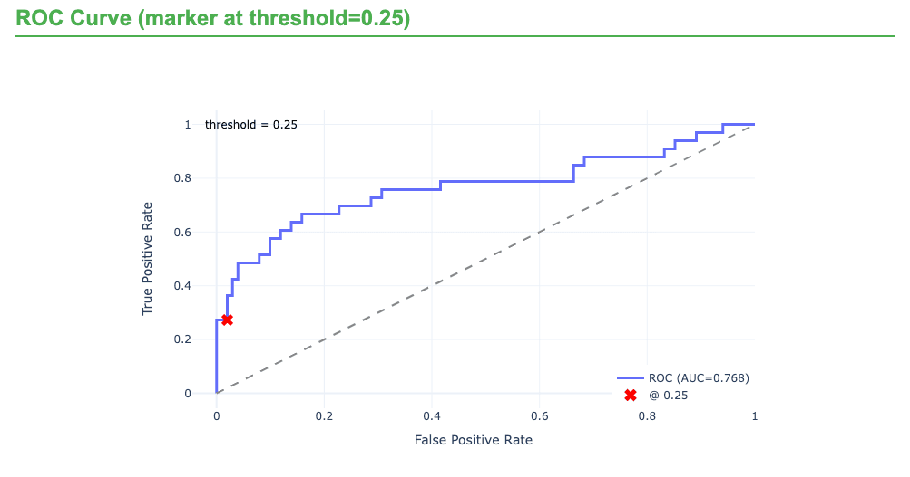

Gleam Multimodal Learner - Head and Neck cancer Recurrence Prediction with HANCOCK
| Author(s) |
|
| Reviewers |
|
OverviewQuestions:
Objectives:
How does Multimodal Learner combine tabular, text, and image modalities in a single model?
How do we configure Multimodal Learner with different modalities?
How do we interpret the model results?
Import the tutorial-focused HANCOCK metadata and JPEG CD3/CD8 image archive into Galaxy.
Train a multimodal model with tabular, text, and image backbones.
Evaluate test performance and interpret the effect of image quality on model metrics.
Time estimation: 1 hourLevel: Intermediate IntermediateSupporting Materials:Published: Mar 25, 2026Last modification: Mar 25, 2026License: Tutorial Content is licensed under Creative Commons Attribution 4.0 International License. The GTN Framework is licensed under MITpurl PURL: https://gxy.io/GTN:T00576version Revision: 1
In this tutorial, we use the HANCOCK head-and-neck cancer cohort (Dörrich et al. 2025) to build a recurrence prediction model with GLEAM Multimodal Learner.
The primary run in this tutorial uses a tutorial-focused derivative of HANCOCK in which CD3/CD8 images were converted from PNG to JPEG (quality 67) to reduce upload size and setup time. This makes the workflow more accessible while preserving the multimodal structure.
Multimodal Learner wraps AutoGluon Multimodal to train a late-fusion model. It automatically builds modality-specific encoders: tabular features with a tabular transformer, text fields with a pretrained language model, and images with a pretrained vision backbone. A fusion network then combines these modality embeddings into a single prediction.
You provide a single CSV/TSV with one row per patient containing the target label and modality references (text columns and image-path columns). Image files are uploaded as one or more ZIP archives; the paths in the table must match filenames inside the ZIP. We use the published train/test split and interpret results with ROC/PR curves, confusion matrices, and threshold-dependent metrics.
AgendaIn this tutorial, we will cover:
Dataset Overview and Composition
The HANCOCK dataset used in this tutorial is a multimodal precision oncology resource that integrates multiple data types to enable comprehensive cancer outcome prediction.
Dataset Description
The HANCOCK (Head and Neck Cancer Outcome Cohort) dataset was published by Dörrich et al. 2025 and represents one of the first large-scale multimodal datasets specifically designed for head and neck cancer outcome prediction.
For this tutorial, we use a Zenodo derivative package built for practical training runs:
- Image archive:
CD3_CD8_images_3GB_jpeg.zip - Metadata tables:
HANCOCK_train_split_3GB_jpeg.csvandHANCOCK_test_split_3GB_jpeg.csv - Image conversion: PNG to JPEG with lossy compression (quality 67), while preserving original image dimensions
- Archive size: about 2.89 GB (3,037 images)
- Matched records: 653 samples, with an approximately 80/20 train/test split
This modified dataset is intended for tutorial and tool demonstration use. It is not a replacement for the original full-quality HANCOCK dataset for research-grade analysis or final benchmarking.
Patient Cohort
- Original HANCOCK cohort: 763 head and neck cancer patients
- Tutorial derivative used here: 653 matched records with updated JPEG paths
- Cancer sites: Oral cavity, oropharynx, hypopharynx, larynx
- Follow-up: Comprehensive outcome tracking with recurrence and survival data
- Data collection: Multi-institutional cohort with standardized data collection protocols
Data Modalities
1. Tabular Data (Clinical and Pathological Features)
- Clinical features: Age, sex, smoking status, primary tumor site
- Pathological features: Tumor grade, stage, histological type
- Blood biomarkers: Complete blood count, liver function, kidney function
- TMA cell density: Quantitative cell counts from tissue microarray analysis
2. Image Data (Tissue Microarray Cores)
- Modality: CD3 and CD8 immunohistochemistry staining
- Resolution: Original image dimensions are preserved
- Content: Tumor microenvironment immune cell infiltration
- Format in this tutorial: JPEG images of individual TMA cores
3. Text Data (ICD Diagnostic Codes)
- Source: International Classification of Diseases (ICD-10) codes
- Content: Diagnostic codes representing comorbidities and medical history
- Format: Free-text ICD code descriptions
Target Variable: 3-Year Recurrence
The primary prediction task is 3-year recurrence, defined as:
- Positive (recurrence = 1): Recurrence within 3 years (1,095 days) of diagnosis
- Negative (recurrence = 0): No recurrence with adequate follow-up (>3 years) or currently living without recurrence
This binary classification task is clinically relevant as early recurrence (within 3 years) is associated with poor prognosis and may benefit from more aggressive treatment strategies.
Data Splits
The tutorial derivative provides a predefined split:
- Training set: approximately 80% of samples
- Test set: approximately 20% of samples
Expected table structure
Because Multimodal Learner requires a specific input structure—a single sample-level table that contains the label and all modality references, plus, when using images, a ZIP archive containing the referenced image files—you must preprocess the dataset to match this format before running the tool. For a HANCOCK-like setup, the training and test tables typically include:
target: recurrence label (0 = no recurrence, 1 = recurrence/progression)clinical covariates: numeric and categorical clinical/pathological variablesicd_text: free-text ICD descriptionscd3_pathandcd8_path: image filenames (or relative paths) for CD3 and CD8 TMA images, which must match files inside the ZIP archive (.jpgpaths in this tutorial dataset)
Comment: Data preparation: shaping HANCOCK for the toolThe raw data published by (Dörrich et al. 2025) can be found here: HANCOCK raw dataset
We preprocessed the raw data to create a tutorial-friendly derivative:
1) Normalize identifiers consistently (e.g., remove leading zeros; standardize missing values) before merging.
2) Join modality tables using a stable identifier (e.g., patient_id).
3) Construct recurrence label for each patient.
4) Keep ICD code text as free text for the text encoder.
5) Convert image files from PNG to JPEG (quality 67), keeping original dimensions.
6) Update metadata paths from
.pngto.jpgso table references match the ZIP archive.7) Preserve a stable train/test partition and avoid leakage across patients.
8) Provide training and test tables in CSV format and all images in one ZIP archive.
A Python script for preprocessing can be found at: HANCOCK_preprocessing

Open image in new tabUsing Multimodal Learner Tool
How it works
Multimodal Learner trains late-fusion prediction models using AutoGluon Multimodal.
- One row per sample: a single CSV/TSV contains the target label plus tabular features and (optionally) text and image references for the same sample (e.g., patient).
- Encoders per modality:
- tabular features are encoded by a transformer-based tabular backbone (handled automatically),
- text columns are encoded by a user-selected pretrained language model,
- image columns are encoded by a user-selected pretrained vision backbone.
- Fusion: modality embeddings are combined by a learned fusion network to produce the final prediction.
- Outputs: an interactive HTML report (ROC/PR curves, confusion matrix, calibration and threshold views), plus a YAML config record and JSON metrics.
Prepare environment and get the data
Hands On: Environment and Data Upload
Create a new history for this tutorial. For example, name it HANCOCK Multimodal Recurrence.
To create a new history simply click the new-history icon at the top of the history panel:
Import the dataset files from Zenodo:
https://zenodo.org/records/18807820/files/HANCOCK_train_split_3GB_jpeg.csv https://zenodo.org/records/18807820/files/HANCOCK_test_split_3GB_jpeg.csv https://zenodo.org/records/18807820/files/CD3_CD8_images_3GB_jpeg.zip
- Copy the link location
Click galaxy-upload Upload at the top of the activity panel
- Select galaxy-wf-edit Paste/Fetch Data
Paste the link(s) into the text field
Press Start
- Close the window
Check that the data formats are assigned correctly. If not, follow the Changing the datatype tip:
- Click on the galaxy-pencil pencil icon for the dataset to edit its attributes
- In the central panel, click galaxy-chart-select-data Datatypes tab on the top
- In the galaxy-chart-select-data Assign Datatype, select
datatypesfrom “New Type” dropdown
- Tip: you can start typing the datatype into the field to filter the dropdown menu
- Click the Save button

Tool setup and run
After the train and test tables are uploaded, configure Multimodal Learner with the following parameters.
Hands On: Configure Multimodal Learner for HANCOCK
- Multimodal Learner ( Galaxy version 0.1.0) with the following parameters:
- param-file Training dataset (CSV/TSV):
HANCOCK_train_split_3GB_jpeg.csv- param-select Target / Label column:
target- param-toggle Provide separate test dataset?:
Yes- param-file Test dataset (CSV/TSV):
HANCOCK_test_split_3GB_jpeg.csv- param-select Text backbone:
google/electra-base-discriminator- param-toggle Use image modality?:
Yes- param-select + Insert Image archive:
click- param-file ZIP file containing images:
CD3_CD8_images_3GB_jpeg.zip- param-select Image backbone:
caformer_b36.sail_in22k_ft_in1k- param-toggle Drop rows with missing images?:
No- param-select Primary evaluation metric:
ROC AUC- param-text Random seed:
42- param-toggle Advanced: customize training settings?:
Yes- param-text Binary classification threshold:
0.25- Run the tool and review the HTML report.
Parameter Rationale Text backbone ELECTRA base performs well on clinical free text Image backbone CAFormer b36 is a strong baseline for CD3/CD8 pathology images ROC AUC metric Robust for imbalanced binary outcomes 5-fold CV Estimates stability across folds Threshold 0.25 Matches the recurrence decision rule used in the use case
Tool Output Files
After the run finishes, you should see these outputs in your history:
- Multimodal Learner analysis report (HTML): Summary metrics, ROC/PR curves, and diagnostic plots
- Multimodal Learner metric results (JSON): Machine-readable metrics for train/validation/test
- Multimodal Learner training config (YAML): Full run settings for reproducibility
Interpreting the Multimodal Learner Report
The HTML report is designed to help you answer two questions quickly: how well does the model discriminate outcomes and what kinds of errors it makes at a chosen operating point.

Open image in new tab- Performance summary (by split)
Review ROC–AUC and PR–AUC alongside threshold-dependent metrics (precision, recall, F1). For recurrence prediction, PR–AUC is often especially informative because the positive class can be relatively rare, and false negatives directly reduce recall. - Diagnostics (curves and confusion matrix)
Use ROC/PR curves to understand ranking performance, then move to the confusion matrix and class-wise metrics to see where errors occur. In the HANCOCK recurrence use case, a common pattern is stronger performance for the negative class (no recurrence) than the positive class, so the main concern is typically missed recurrence cases (false negatives). - Calibration and threshold behavior
Calibration plots help you decide whether predicted probabilities can be interpreted as risk. Threshold views show how changing the cutoff trades off false negatives versus false positives. The configuration used was 0.25 decision threshold to make this tradeoff explicit (rather than relying on the default 0.5). - Configuration and reproducibility
Confirm that the report matches your intended setup: which modalities were used, chosen text and image backbones, missing-image handling, split strategy, random seed, and time budget.
Tutorial Results (JPEG Derivative Dataset)
The following held-out test metrics are from the tutorial run using the JPEG-compressed image archive (CD3_CD8_images_3GB_jpeg.zip). The smaller archive greatly improves upload and execution practicality, with the expected tradeoff of reduced predictive performance compared with the full-resolution image setup.
| Metric | Value |
|---|---|
| Accuracy | 0.72 |
| Precision | 0.36 |
| Recall (Sensitivity/TPR) | 0.15 |
| F1-Score | 0.21 |
| Specificity (TNR) | 0.91 |
| ROC-AUC | 0.63 |
| PR-AUC | 0.33 |
| LogLoss | 0.60 |
| MCC | 0.09 |
How to read this run:
- The model still captures some recurrence signal (ROC-AUC above 0.5), but discrimination is moderate.
- Specificity remains high (0.91), while recall is low (0.15), indicating under-detection of recurrence cases at the selected threshold.
- PR-AUC and MCC are modest, which is consistent with a harder positive-class detection setting under image compression.
What to do next with this tutorial run
- Use threshold plots in the report to test operating-point tradeoffs (higher recall usually lowers precision/specificity).
- Keep this lightweight setup for learning the workflow and tool behavior.
- Use the high-quality setup (below) when you need stronger performance analysis or paper-level comparison.
Conclusion
Using the HANCOCK recurrence task as an example, this tutorial demonstrates how Multimodal Learner integrates tabular clinical variables, free-text ICD descriptions, and CD3/CD8 images in a single late-fusion workflow. The tutorial-focused JPEG derivative provides a much smoother user experience for data upload and execution, but the resulting metrics are lower than the full-resolution setup. This contrast highlights a core practical lesson for multimodal learning in pathology workflows: data quality, especially image quality, has direct impact on downstream performance and benchmark comparability.
High-Quality Image Run (Reference Section, ~45 GB ZIP)
The results that were previously shown in the main tutorial are retained here as a separate reference run using the larger, higher-quality image archive (approximately 45 GB ZIP). This setup is closer to research-grade benchmarking but requires substantially more storage, upload time, and compute.
Reference files for the higher-quality run:
https://zenodo.org/records/17933596/files/HANCOCK_train_split.csvhttps://zenodo.org/records/17933596/files/HANCOCK_test_split.csvhttps://zenodo.org/records/17727354/files/tma_cores_cd3_cd8_images.zip
Comment: Data preparation: shaping HANCOCK for the toolA Python script for preprocessing can be found at: HANCOCK_preprocessing
Reference Results with Full-Quality Images
| Metric | Value |
|---|---|
| Accuracy | 0.81 |
| Precision | 0.90 |
| Recall (Sensitivity/TPR) | 0.27 |
| F1-Score | 0.42 |
| Specificity (TNR) | 0.99 |
| ROC-AUC | 0.78 |
| PR-AUC | 0.67 |

Open image in new tabComparison with the HANCOCK Benchmark Paper
The original HANCOCK study reported an ROC-AUC of 0.79 for recurrence prediction using engineered multimodal features (Dörrich et al. 2025). With full-quality images and raw modalities in Multimodal Learner, the reference run reached ROC-AUC 0.78, which is close to the published benchmark.
| Metric | HANCOCK paper (reference) | Multimodal Learner (full-quality image run) |
|---|---|---|
| ROC-AUC | 0.79 | 0.78 |
You've Finished the Tutorial
Key points
Multimodal Learner trains a late-fusion model with modality-specific encoders and a learned fusion network.
The tutorial dataset is a JPEG-compressed derivative of HANCOCK that is easier to upload and run.
Data quality can materially affect multimodal prediction performance and benchmark comparability.
Frequently Asked Questions
Have questions about this tutorial? Have a look at the available FAQ pages and support channelsReferences
- Dörrich, M., M. Balk, T. Heusinger, and others, 2025 A multimodal dataset for precision oncology in head and neck cancer. Nature Communications 16: 7163. 10.1038/s41467-025-62386-6
Feedback
Did you use this material as an instructor? Feel free to give us feedback on how it went.
Did you use this material as a learner or student? Click the form below to leave feedback.

Citing this Tutorial
- Paulo Cilas Morais Lyra Junior, Khai Van Dang, Alyssa Pybus, Junhao Qiu, Jeremy Goecks, Gleam Multimodal Learner - Head and Neck cancer Recurrence Prediction with HANCOCK (Galaxy Training Materials). https://training.galaxyproject.org/training-material/topics/statistics/tutorials/multimodal_learner/tutorial.html Online; accessed TODAY
- Hiltemann, Saskia, Rasche, Helena et al., 2023 Galaxy Training: A Powerful Framework for Teaching! PLOS Computational Biology 10.1371/journal.pcbi.1010752
- Batut et al., 2018 Community-Driven Data Analysis Training for Biology Cell Systems 10.1016/j.cels.2018.05.012
Congratulations on successfully completing this tutorial!@misc{statistics-multimodal_learner, author = "Paulo Cilas Morais Lyra Junior and Khai Van Dang and Alyssa Pybus and Junhao Qiu and Jeremy Goecks", title = "Gleam Multimodal Learner - Head and Neck cancer Recurrence Prediction with HANCOCK (Galaxy Training Materials)", year = "", month = "", day = "", url = "\url{https://training.galaxyproject.org/training-material/topics/statistics/tutorials/multimodal_learner/tutorial.html}", note = "[Online; accessed TODAY]" } @article{Hiltemann_2023, doi = {10.1371/journal.pcbi.1010752}, url = {https://doi.org/10.1371%2Fjournal.pcbi.1010752}, year = 2023, month = {jan}, publisher = {Public Library of Science ({PLoS})}, volume = {19}, number = {1}, pages = {e1010752}, author = {Saskia Hiltemann and Helena Rasche and Simon Gladman and Hans-Rudolf Hotz and Delphine Larivi{\`{e}}re and Daniel Blankenberg and Pratik D. Jagtap and Thomas Wollmann and Anthony Bretaudeau and Nadia Gou{\'{e}} and Timothy J. Griffin and Coline Royaux and Yvan Le Bras and Subina Mehta and Anna Syme and Frederik Coppens and Bert Droesbeke and Nicola Soranzo and Wendi Bacon and Fotis Psomopoulos and Crist{\'{o}}bal Gallardo-Alba and John Davis and Melanie Christine Föll and Matthias Fahrner and Maria A. Doyle and Beatriz Serrano-Solano and Anne Claire Fouilloux and Peter van Heusden and Wolfgang Maier and Dave Clements and Florian Heyl and Björn Grüning and B{\'{e}}r{\'{e}}nice Batut and}, editor = {Francis Ouellette}, title = {Galaxy Training: A powerful framework for teaching!}, journal = {PLoS Comput Biol} }
You can use Ephemeris's
shed-tools installcommand to install the tools used in this tutorial.shed-tools install [-g GALAXY] [-a API_KEY] -t <(curl https://training.galaxyproject.org/training-material/api/topics/statistics/tutorials/multimodal_learner/tutorial.json | jq .admin_install_yaml -r)Alternatively you can copy and paste the following YAML
--- install_tool_dependencies: true install_repository_dependencies: true install_resolver_dependencies: true tools: - name: multimodal_learner owner: goeckslab revisions: a92f200d296e tool_panel_section_label: Machine Learning tool_shed_url: https://toolshed.g2.bx.psu.edu/ - name: multimodal_learner owner: goeckslab revisions: 3719606b94af tool_panel_section_label: Machine Learning tool_shed_url: https://toolshed.g2.bx.psu.edu/